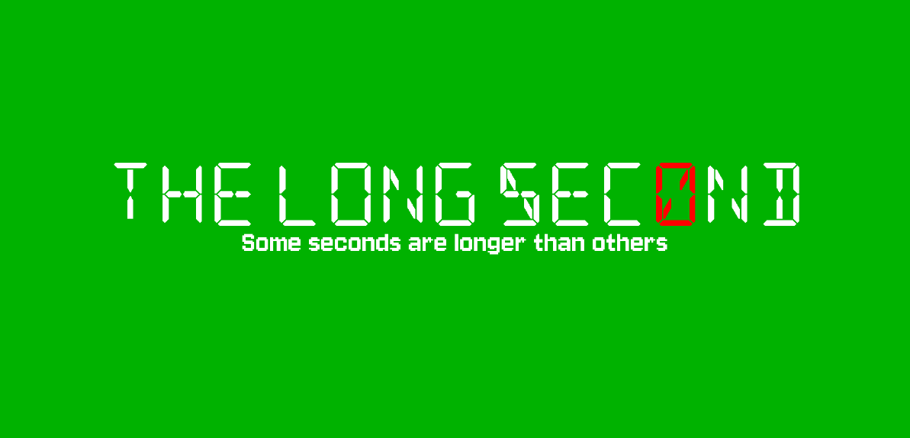

GameMaker Studio 2 | Time-Manipulation Puzzle Platformer

The Long Second is a 2D time-manipulation puzzle platformer made solo in four days for the 2026 GMTK Game Jam under the theme Countdown. In the game, you have ten seconds to escape a set of chambers designed to test your skills with four ways to bend time around you: rewind, slow, pause and fast-forward. Hwever, the player does not get affected by the time changes. You always move at 1x speed, and gravity never stops, so freezing the world will never carry you across a gap.
I had built a time system for a jam once before. Replica recorded player inputs and replayed them through the
movement system, which worked because it only ever had to reproduce one object: the player. This time the whole
level had to be able to bend to the time abilities given. All obstacles and platforms needed to be manipulatable.
So I went the other way and gave every dynamic object a ring buffer of its own state, written each frame and read back during a rewind.
Objects declare what matters about them in their Create event and the component does the rest.
The rule that made it hold together was learning not to store anything I could recalculate. My first pass
snapshotted everything, including values derived from other values, and rewinding produced objects that were
subtly wrong like a mace whose angle no longer matched its rotation count, a pendulum that drifted off its arc, etc.
Once I switched to snapshotting only the true inputs to each object's motion and deriving the rest after the
restore, every one of those desyncs disappeared at the same time.
GML only allows one parent per object, which was a problem when a moving platform needed to be both solid and
rewindable. Rather than fight the hierarchy I wrote the time system as a set of functions any object can opt
into. The time_init, time_can_act, time_scale, time_step functions
we written so a platform inherits from the collision parent and still gets full time behaviour. Every obstacle I added
afterwards plugged into it without the system changing shape, which is the clearest sign I have had that an
architecture decision was the right one.
The jam version shipped with an hour to spare and the feedback was consistent: players used freeze for
everything and barely touched the other three powers, and sadly, they were right. Freezing time stopped the countdown as
well as the world, so it cost nothing, and most of my chambers were built around threats rather than distances.
In the post-jam version, I rebuilt every chamber around the three things freeze genuinely cannot do such as
crossing a gap, restore something already gone, and create something that has not happened yet. I also
rebalanced the costs so freeze became a scalpel rather than a default. Reading that feedback was super beneficial
as it helped me re-iterate the game to the polished state it has become today.